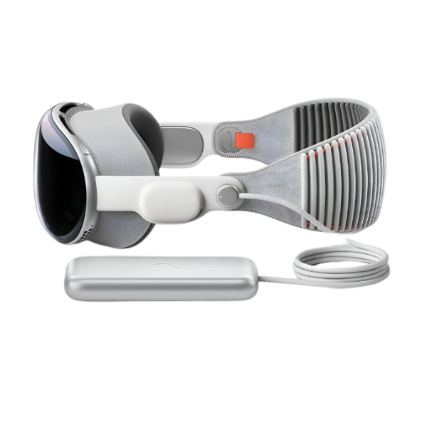

LANÇAMENTO
O lançamento do Apple Vision Pro não é apenas mais um passo na evolução dos dispositivos tecnológicos; é um marco que promete transformar a maneira como interagimos com o mundo ao nosso redor.
O lançamento do Apple Vision Pro, marca a estreia da Apple no universo da realidade aumentada e virtual. Combinando tecnologia de ponta e um design futurista, o Vision Pro promete transformar a forma como as pessoas interagem com o conteúdo digital, integrando-o ao ambiente físico de maneira imersiva e intuitiva.O dispositivo será disponibilizado inicialmente em 2024, nos Estados Unidos, e traz recursos avançados, como controle por voz, gestos e rastreamento ocular, permitindo uma experiência natural e fluida.
O Vision Pro reflete a visão da Apple para o futuro da computação espacial, abrindo novas possibilidades para entretenimento, produtividade e comunicação.
Apple Vision Pro
O Apple Vision Pro combina perfeitamente o conteúdo digital com o seu espaço físico.
O Apple Vision Pro é o dispositivo de realidade mista da Apple que combina realidade aumentada (AR) e realidade virtual (VR) em uma experiência imersiva. Com um design futurista e avançadas tecnologias de processamento visual, o Vision Pro permite que os usuários interajam com conteúdos digitais como se estivessem no mundo real, seja para entretenimento, trabalho ou comunicação.
Utilizando controles intuitivos por voz, mãos e olhos, ele transforma o ambiente ao seu redor em um espaço digital interativo. Esse dispositivo marca a entrada da Apple no mundo dos "wearables espaciais", trazendo inovação e novas possibilidades de experiências digitais.Assim, você pode trabalhar, assistir, reviver memórias e se conectar de maneiras nunca antes possíveis.
A era da computação espacial chegou.
Uma nova dimensão para entretenimento.
O Apple Vision Pro leva o entretenimento para uma nova dimensão, oferecendo experiências imersivas que transformam o modo como consumimos conteúdo digital. Com telas de alta resolução e som espacial, ele cria um ambiente de cinema pessoal, onde filmes, jogos e shows ganham vida em uma escala envolvente e interativa.
Graças à realidade aumentada, o usuário pode também "trazer" personagens e cenas para o ambiente físico, experimentando entretenimento de maneira inovadora e integrada ao mundo real. Essa tecnologia expande as possibilidades de imersão e engajamento, mudando completamente a experiência de lazer e diversão.
Apple Immersive Video
O Apple Immersive Video coloca você no centro da ação com uma imersão alucinante. E com mais pixels do que uma TV 4K para cada olho, você pode desfrutar de conteúdo incrível onde quer que esteja: em um voo longo ou no sofá de casa. O Apple Immersive Video é uma nova experiência que transporta o espectador para uma visualização em 180 graus de vídeos e ambientes virtuais de alta definição.
Esse recurso cria uma sensação de presença única, onde o usuário pode explorar cenas ao seu redor com detalhes surpreendentes, proporcionando uma imersão total em filmes, eventos e documentários.
Combinando áudio espacial e um campo de visão expansivo, o Apple Immersive Video redefine a maneira de assistir conteúdos, dando vida ao entretenimento de forma interativa e profundamente envolvente.
Design e Conforto
O dispositivo é uma espécie de "óculos" que cobre os olhos completamente, mas com um design sofisticado, feito em alumínio e vidro, com acolchoamento confortável.
Com uma estrutura leve e materiais de alta qualidade, o dispositivo combina funcionalidade com um visual elegante e futurista.
Além disso, o Vision Pro possui um sistema de ventilação eficiente para evitar aquecimento. Esse cuidado com ergonomia e estilo garante uma experiência confortável, sem comprometer a estética refinada que é característica da Apple.
O ajuste é personalizável para se adaptar bem ao rosto do usuário, com opções de troca de correias e encaixes para óculos de grau.
Tecnologia de Tela e Qualidade de Imagem
Equipado com displays de altíssima resolução, ele oferece imagens 4K para cada olho, gerando uma experiência visual extremamente detalhada.
A Apple usa câmeras voltadas para o mundo externo, permitindo que o usuário veja o ambiente ao seu redor enquanto usa o dispositivo, criando uma experiência de realidade mista.
A combinação dessas telas com tecnologias de ajuste de brilho, contraste e cor permite que o usuário veja imagens incrivelmente detalhadas e fiéis à realidade. Essa qualidade de imagem é fundamental para uma experiência de realidade mista que parece natural, envolvente e altamente impactante.
Sistema Operacional - visionOS
O Vision Pro roda um sistema operacional exclusivo, o visionOS, desenvolvido para suportar apps de realidadeaumentada e virtual.
Projetado para ser intuitivo e imersivo, o visionOS permite que o usuário interaja com aplicativos e conteúdos digitais diretamente no espaço ao seu redor, utilizando comandos de voz, gestos e movimentos oculares.
O visionOS marca uma nova era para sistemas operacionais, trazendo a computação espacial para o dia a dia.
Experiências de Imersão
Experiências de imersão são vivências que envolvem o usuário em um ambiente sensorial interativo, criando uma sensação de presença e envolvimento intenso.
Seja em jogos, filmes, turismo virtual ou simulações profissionais, a imersão transforma a interação tradicional com a tecnologia, permitindo que as pessoas vivam o digital como se fosse uma extensão do mundo físico, com novas possibilidades de engajamento e aprendizado.
Ele também oferece uma experiência única de captura de momentos em 3D, permitindo que os usuários façam "fotos" e vídeos imersivos em realidade aumentada.
Preço e Disponibilidade
Seu preço inicial de $3.499. Após o lançamento nos EUA, a Apple planeja expandir gradualmente sua disponibilidade para outros mercados internacionais, embora ainda não haja datas confirmadas para essas regiões.
Esse preço reflete as tecnologias avançadas integradas ao dispositivo, incluindo telas de alta resolução, som espacial e o processamento de realidade mista que permite uma experiência única.